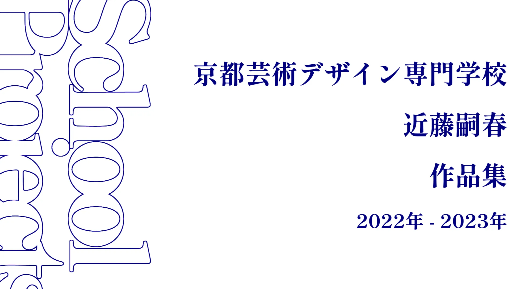
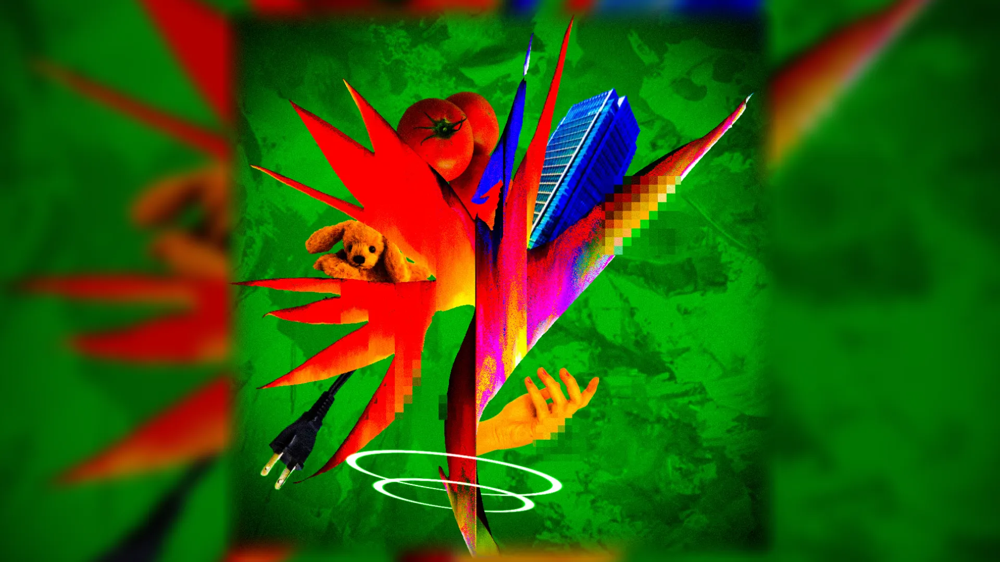
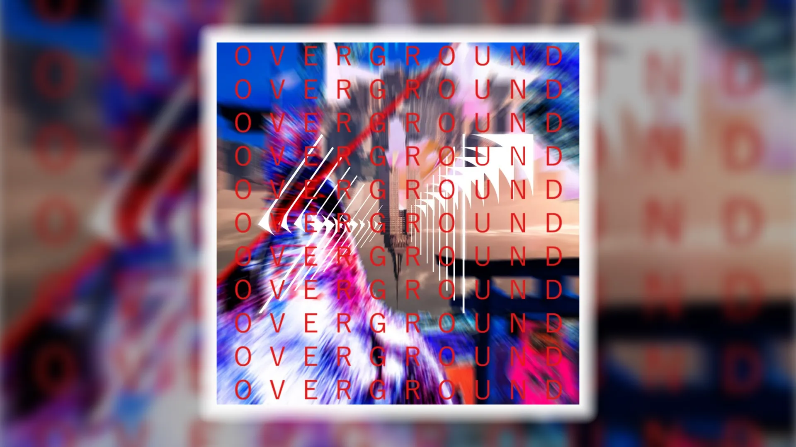
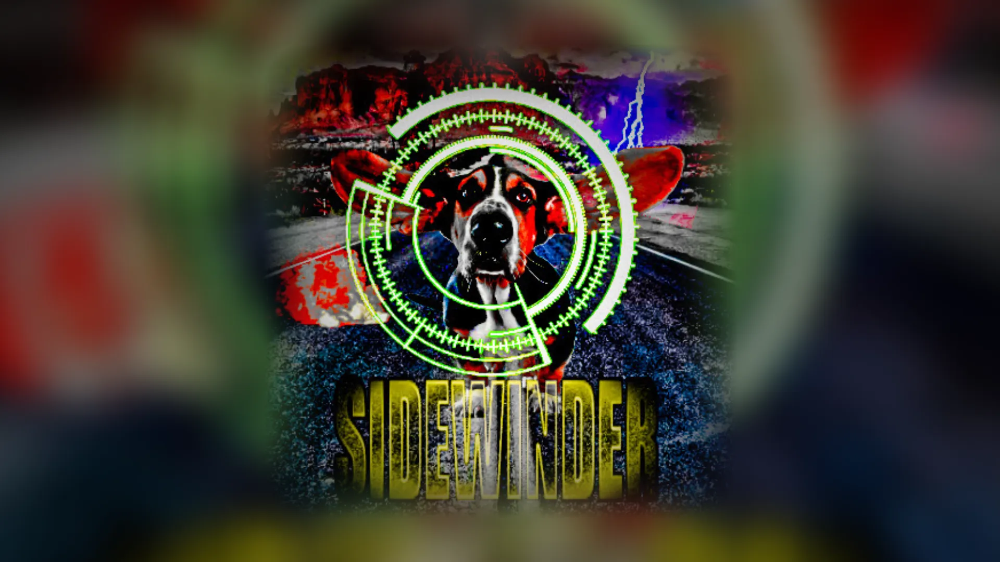
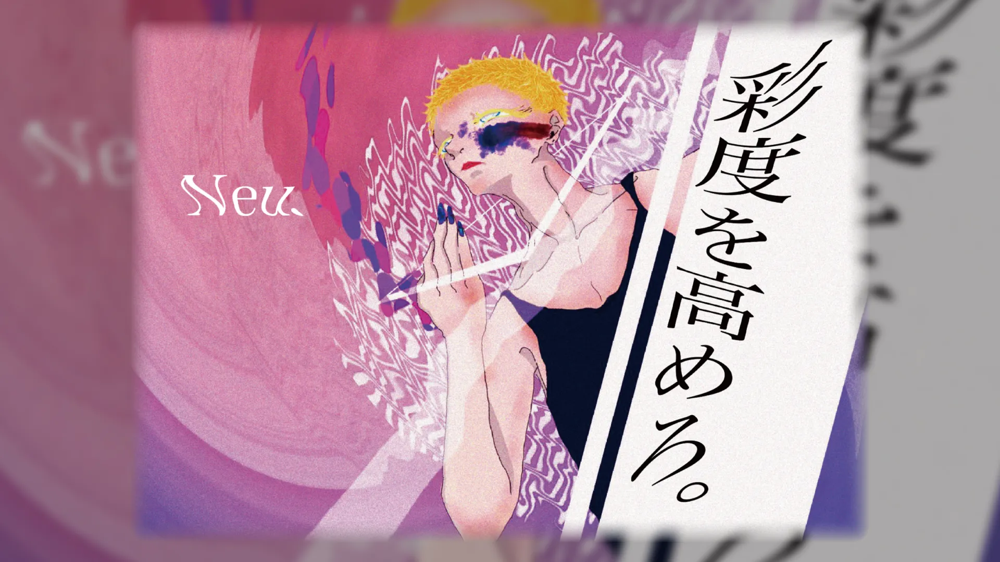
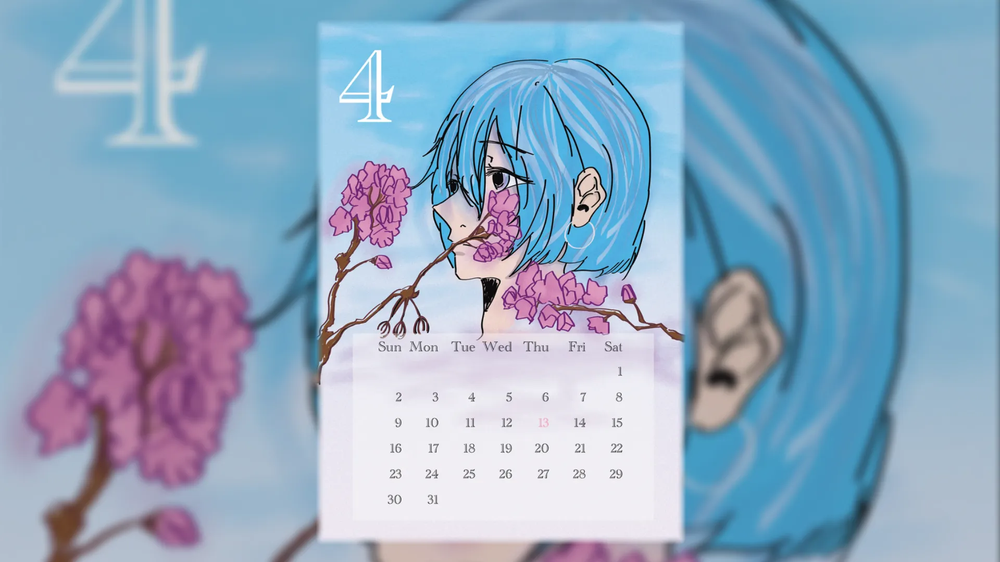
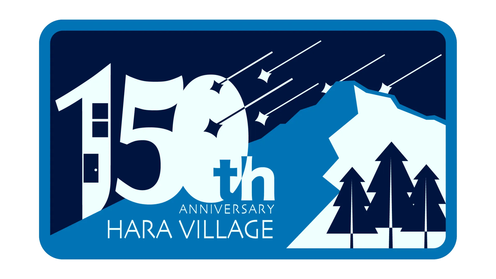
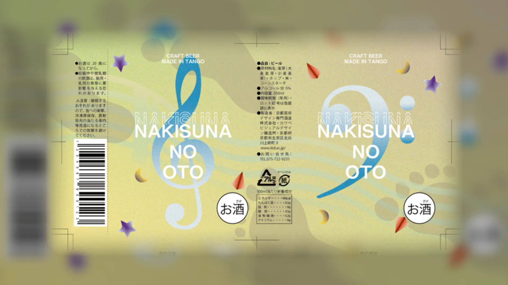
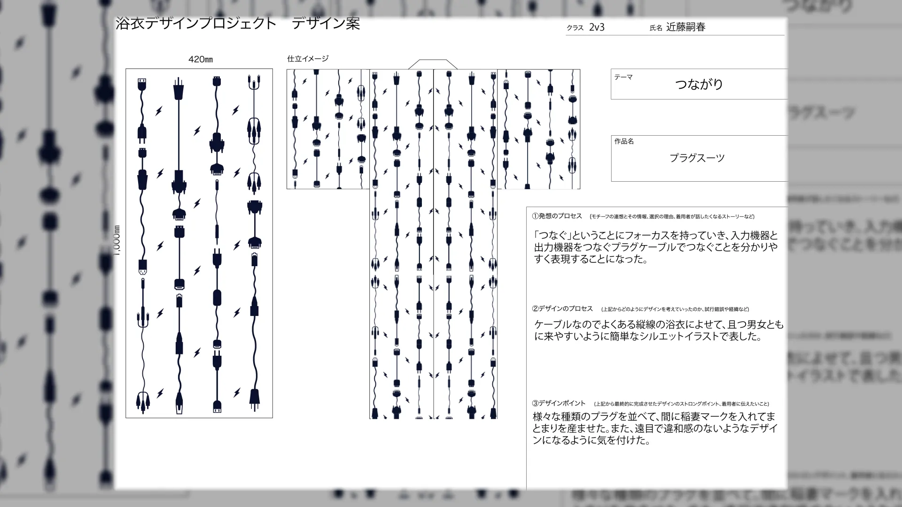

Design
京都芸術デザイン専門学校 近藤嗣春 作品集
Graphic Design
2022.4.1 -2023.2.14
京都芸術デザイン専門学校在学中に作った作品の一部(デザインを中心)をまとめたページ。
様々な授業で制作したものの中で、お気に入りを選出。
Production Process
元々、動画制作者になりたいという願望があったのだが、高校時代にグラフィックやロゴデザインの世界を知った。最終的になりたいものになるとしても、基礎がないといけないと考えた結果、入学することを決意。クラスメイトと切磋琢磨しながら作り上げられた作品が今の礎となっている。

The Strelitzia
自身を象徴する花「ストレリチア(和名：極楽鳥花)」を、その花言葉を元にコラージュした作品。

OVERGROUND
「地上」「大地」をテーマにコラージュした作品。

SIDEWINDER - ナナホシ管弦楽団
ナナホシ管弦楽団 様の楽曲、サイドワインダーをテーマにオリジナルで制作したジャケットアートワーク。

架空化粧品デザイン「Neu.」
架空の化粧品のビジュアルとロゴのデザイン。
現代の思想であるジェンダーレスをテーマに、男女が混ざり合いつつもそれぞれ確立された存在であることを主張することをデザインに落とし込んだ。センターの人物は男性でもあり女性でもあるとしている。
キャッチコピーは「彩度を高めろ。」
「性別の範疇を超え、自分自身の考える自分らしさを最大限まで引き上げる」ということを表している。

カレンダーデザイン「4月」
「4月」をテーマに、イラストとデザインを制作。春の淡さと儚さを表した。

原村 150周年ロゴ
コンセプトは「星の降る夜の原村から見える八ヶ岳」。
原村の魅力として綺麗な夜景、星空というワードをキーワードとしてコンセプトを考案。祝い事は夜にすることが多い(一般的な祭りなども夜が多いなど)ということや、150年以降も原村が良い場所であり続けられるようにという祈りの意味も込めて流れ星の流れる八ヶ岳を描写した。
八ヶ岳は実写画像からトレースし、150の1をペンションのようなデザインにした。また、上記にあった「今後への祈り」を具体的に考え、「151年目を無事迎えること」という考え方にした。それを表すのに150の一の位(今回は０)に祈りのこもった星が流れていくという描写をした。原村が観光客、住人ともに安らぎの地となるように願いを込めた

"NAKISUNA NO OTO" 缶ビールパッケージデザイン
故郷のオリジナルビールのデザインを制作するという課題。自身の地元"京丹後市"には「鳴き砂」と呼ばれる砂があり、それをモチーフに制作した。
その砂は踏むと音が鳴るという特色を持っており、歩くだけで音楽を奏でられるということをデザインに落とし込んだ。
ト音記号とヘ音記号に五線譜が、音楽というものを具体的に魅せている。
また、砂浜が譜面の上で、足で踏むことで音符がつくことを表現している。

学内プレコン 浴衣デザイン「繋がり」
学内でのプレコンで制作したデザイン。「繋がり」という決められたテーマから派生して、「コード」「プラグ」という発想に至った。
Production Credit
題名 | Title
京都芸術デザイン専門学校 近藤嗣春 作品集
製作 | Create
近藤 嗣春
製作ツール | Tools
◽️デザイン | Design - Adobe Illustrator Photoshop